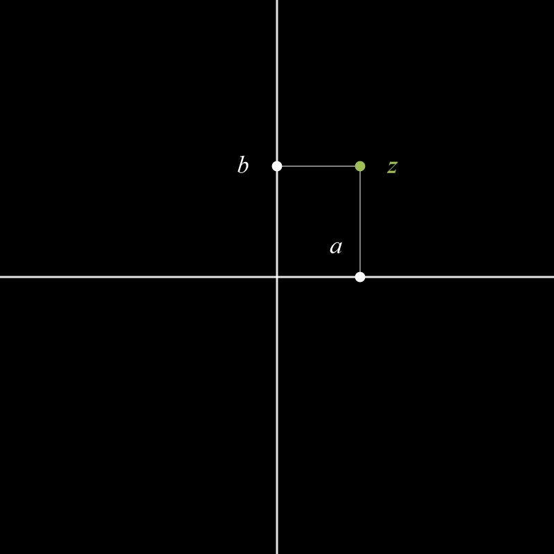

1. Les Nombres Complexes
1.1. Définition
Un nombre complexe est un nombre qui est la somme d'un nombre réelle et d'un nombre réelle multiplié par \(\color{#00bf00}i\)
(tel que \(\color{#00bf00}i^{\color{#ffffff}2}\color{#ffffff}=-1\)), donc si \(z\) est un nombre complexe, alors:
\[z=a+b\times\color{#00bf00}i\color{#ffffff}\]
Les nombres complexes sont utilisés en physique, électricité, et la rotation.
1.1.1. Opérations
Soient \(z_1 = a + b \color{#00bf00}i\color{#ffffff}\) et \(z_2 = c + d \color{#00bf00}i\color{#ffffff}\), alors :
- Addition : \(z_1 + z_2 = (a + c) + (b + d) \color{#00bf00}i\color{#ffffff}\)
- Soustraction : \(z_1 - z_2 = (a - c) + (b - d) \color{#00bf00}i\color{#ffffff}\)
- Multiplication : \(z_1 \times z_2 = (ac - bd) + (ad + bc) \color{#00bf00}i\color{#ffffff}\)
- Division : \[
\frac{z_1}{z_2} = \frac{a + b \color{#00bf00}i\color{#ffffff}}{c + d \color{#00bf00}i\color{#ffffff}} =
\frac{(ac + bd) + (bc - ad) \color{#00bf00}i\color{#ffffff}}{c^{2} + d^{2}}
\]
1.1.2. Forme rectugulaire et polaire
Un nombre complexe peut être représenté par sa forme rectangulaire: \[
z=a+b\times\color{#00bf00}i\color{#ffffff}=a+b\color{#00bf00}i\color{#ffffff}
\]
mais il peut être aussi représenté sous sa forme polaire \[
z = r e^{\color{#00bf00}i\color{#ffffff}\theta} =
\begin{cases}
\sqrt{a^{2}+b^{2}} e^{\color{#00bf00}i\color{#ffffff}\arctan{\frac{b}{a}}} & a > 0 \\
\sqrt{a^{2}+b^{2}} e^{\color{#00bf00}i\color{#ffffff}\left(\arctan{\frac{b}{a}} + \pi\right)} & a < 0, b > 0 \\
\sqrt{a^{2}+b^{2}} e^{\color{#00bf00}i\color{#ffffff}\left(\arctan{\frac{b}{a}} - \pi\right)} & a < 0, b < 0 \\
b e^{\color{#00bf00}i\color{#ffffff}\frac{\pi}{2}} & a = 0, b > 0 \\
-b e^{-\color{#00bf00}i\color{#ffffff}\frac{\pi}{2}} & a = 0, b < 0
\end{cases}
\]
Ici, \(\arctan\) est en radian, donc un tour complet est \(2\pi\) et non \(360\).
\(\arctan{\frac{b}{a}}\) est l'argument de \(z\), alors que \(\sqrt{a^2+b^2}\) est sa valeur abosule.
1.2. Représentation dans le plan complexe
Un nombre complexe \(z = a + b\color{#00bf00}i\color{#ffffff}\) peut être représenté
par un point du plan, appelé plan complexe :
- L’axe horizontal représente la partie réelle \(a\)
- L’axe vertical représente la partie imaginaire \(b\)

Le point vert représente le nombre complexe
\[
z = a + b\color{#00bf00}i\color{#ffffff}
\]
avec \(a\) sur l’axe réel et \(b\) sur l’axe imaginaire.